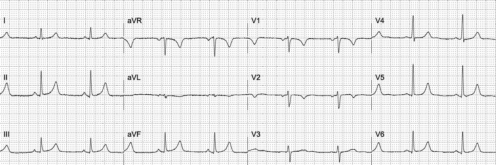
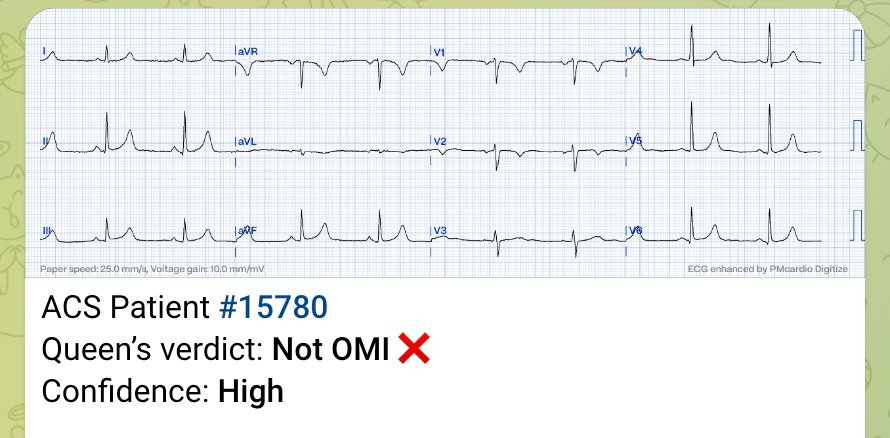
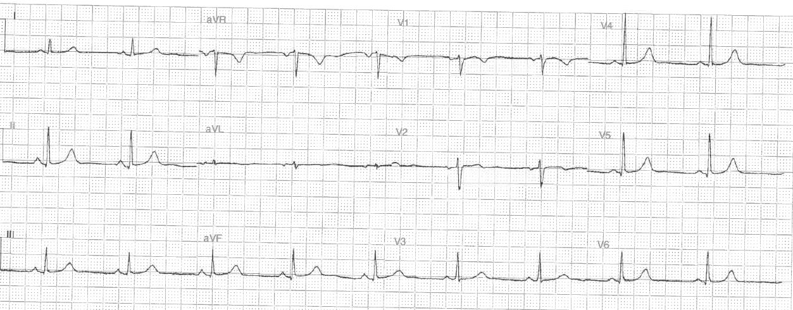
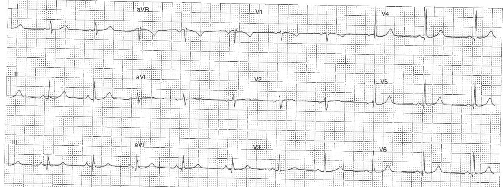
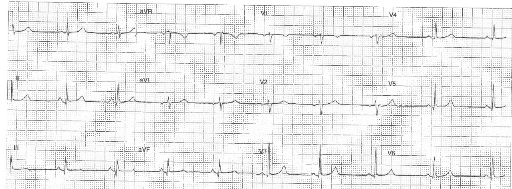
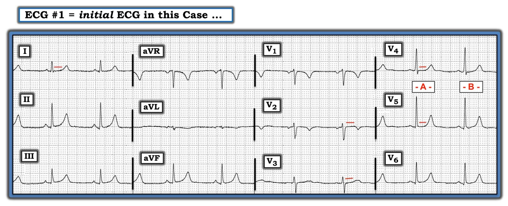

01/08/2020 — Máy tính và bác sĩ chuyển viện đều nói “bình thường”. Bạn nghĩ sao?
Bản dịch tiếng Việt của bài "Computer and transferring physician say “normal.” What do you think?" – Dr. Smith’s ECG Blog. Giữ nguyên toàn bộ 8 hình ảnh của bản gốc.
Ca này do Guillaume Debaty, ở vùng Grenoble (Pháp), gửi đến. Ông đã có nhiều công trình xuất sắc về ngừng tim, trong đó có vai trò đồng tác giả nghiên cứu của chúng tôi về esmolol trong ngừng tim kháng trị, và nhiều công trình khác cùng Keith Lurie.
Xem hồ sơ Google Scholar của ông tại đây.
Một phụ nữ 40 mấy tuổi đang ở một vùng núi Alps hẻo lánh thì than đau ngực kiểu bóp nghẹt.
Các bác sĩ nói điện tâm đồ bình thường, máy tính cũng vậy.
Guillaume đã yêu cầu gửi bản ghi này về.


Guillaume nhận thấy ST chênh lên rất ít ở các chuyển đạo dưới đi kèm với ST chênh xuống và sóng T đảo ngược bất thường ở aVL. Lưu ý rằng điện thế của STD và TWI RẤT nhỏ — nhưng điện thế của QRS cũng vậy. Mọi ST chênh xuống và sóng T đảo ngược đều mang tính tương xứng (proportionality), và phải được đánh giá trong bối cảnh điện thế QRS lớn hay nhỏ.
Sóng T đảo ngược ở aVL và ở V2 đều là những dấu hiệu “mềm” của OMI thành dưới.
Ở đây STD ở aVL là có ý nghĩa. Ông đã nhận ra điều đó.
Họ kích hoạt phòng thông tim và phát hiện tắc 100% nhánh bờ tù. Lẽ ra đó có thể là một điện tâm đồ dương tính giả, nhưng nếu vậy thì cũng chẳng gây hại gì. Và nó đã không phải dương tính giả.
Queen of Hearts không thể xem được ca này:


Dĩ nhiên chúng ta không biết chắc chắn rằng các dấu hiệu ở thành dưới thể hiện thiếu máu cục bộ. Có thể đây là điện tâm đồ nền bình thường và tình trạng tắc nhánh bờ là thầm lặng về mặt điện tâm đồ. Cách duy nhất để phân biệt là thấy được sự tiến triển trên các điện tâm đồ sau đó: nếu không có tiến triển, thì những dấu hiệu này không liên quan gì đến tình trạng tắc mạch.
Đây là các điện tâm đồ đó:
Sau thông tim:


6 giờ sau:


Không còn chút STD nào ở aVL
Sóng T ở aVL giờ đã dương
Điện tâm đồ này cho thấy OMI đã hồi phục gần như hoàn toàn
30 giờ sau


Hồi phục hoàn toàn
Những điểm cần học
1. Điện tâm đồ trong OMI có thể bình thường.
2. Điện tâm đồ trong OMI có thể trông bình thường thoạt nhìn, nhưng thực ra lại rất đáng nghi ngờ hoặc có giá trị chẩn đoán
3. Bất kỳ ST chênh xuống nào ở aVL kèm BẤT KỲ STE nào ở các chuyển đạo dưới đều rất đáng nghi ngờ OMI.
4. Máy tính mắc lỗi này rất thường xuyên. Xem tại đây hơn 20 ca máy tính đọc điện tâm đồ là hoàn toàn bình thường trong khi thực tế nó có giá trị chẩn đoán OMI (một số trong rất nhiều ca ở đây là các bệnh lý khác ngoài OMI).
5. Cách duy nhất để CHỨNG MINH rằng các dấu hiệu điện tâm đồ là do OMI/thiếu máu cục bộ được cho là có là chỉ ra sự tiến triển ở vùng chi phối đó. Các điện tâm đồ sau đó đã chứng minh điều này.

===================================
BÌNH LUẬN CỦA TÔI, bởi KEN GRAUER, MD (1/8/2020):
===================================
Xét về mục đích minh họa — thời điểm của ca này là lý tưởng, vì nó đến chỉ 1 ngày sau khi Dr. Smith đăng bài đóng góp mới nhất của ông cho thách thức thiết lập lại mô hình — rời xa cách tiếp cận “STEMI” so với “non-STEMI” đầy vấn đề — và hướng tới việc chấp nhận mô hình OMI-NOMI, thực tế và hiệu quả hơn nhiều.
- Ca hôm nay hoàn toàn có thể là một trong số ước tính 25-30% các trường hợp tắc mạch vành cấp vẫn thường xuyên bị bỏ sót do khăng khăng đòi tiêu chuẩn STEMI tính bằng milimét trước khi cân nhắc can thiệp.
Để rõ ràng — tôi đã đánh dấu và trình bày lại điện tâm đồ ban đầu của ca hôm nay (Hình 1). Cần nhấn mạnh rằng các dấu hiệu điện tâm đồ trong Hình 1 rất tinh tế — và không dấu hiệu nào trong số này, nếu đứng riêng lẻ, buộc tôi phải kích hoạt phòng thông tim.
- Như đã nhấn mạnh trong Bình luận của tôi ở bài ngày 31 tháng Bảy năm 2020 — trong bối cảnh triệu chứng tim mới xuất hiện — cần tìm bất kỳ dấu hiệu nào trong số nhiều dấu hiệu điện tâm đồ khác đáng lo ngại về một biến cố cấp đang diễn ra dù không đạt tiêu chuẩn milimét của STEMI. Một số dấu hiệu như vậy có hiện diện trong ca này.
LƯU Ý: Máy tính không “mắc lỗi” trong ca này. Lỗi là do các bác sĩ lâm sàng đã chấp nhận nguyên xi kết quả đọc “bình thường” của máy tính cho một điện tâm đồ có những dấu hiệu tinh tế nhưng chắc chắn hiện diện.
- MẤU CHỐT: Chúng ta nên dự liệu rằng kết quả đọc bằng máy tính sẽ không nhạy trong việc phát hiện những thay đổi cấp tính tinh tế. Vì vậy — Đừng xem kết quả đọc bằng máy tính cho đến sau khi bạn đã đưa ra quyết định lâm sàng. Ngay cả khi đó, nếu bạn lo ngại dựa trên điện tâm đồ và bệnh sử — Đừng để bị lung lay bởi một kết quả âm tính của máy tính!
- T.B. (P.S.) — Dù được lập trình tốt đến đâu — máy tính vẫn không thể “chạm vào” và trò chuyện với bệnh nhân trước mặt. Và, trong ca hôm nay — việc người phụ nữ 40 mấy tuổi trước đó khỏe mạnh này đến với cơn đau ngực “bóp nghẹt” mới khởi phát có tầm quan trọng then chốt đối với việc ra quyết định lâm sàng tối ưu — bởi kiểu bệnh sử này cần làm bạn tăng độ nhạy bén trong việc tìm kiếm những dấu hiệu điện tâm đồ tinh tế mà chúng ta không nên trông đợi kết quả đọc bằng máy tính phát hiện ra.


SUY NGHĨ CỦA TÔI về điện tâm đồ #1: Nhịp xoang tần số ~60/phút. Tất cả các khoảng và trục đều bình thường. Không có lớn các buồng tim. Về Thay đổi Q–R–S–T — tôi ghi nhận những điểm sau:
- Có các sóng Q rất nhỏ và hẹp ở các chuyển đạo dưới-bên. Chúng không có ý nghĩa lâm sàng.
- Tăng tiến sóng R bình thường — với vùng chuyển tiếp nằm giữa các chuyển đạo V3 và V4.
- Có tình trạng dẹt tinh tế của đoạn ST ở một số chuyển đạo (các đường ĐỎ nằm ngang). Bình thường, đoạn ST ở hầu hết các chuyển đạo phải dốc lên từ từ, rồi hòa vào một sóng T dương gần như không nhận thấy ranh giới. Đó không phải là điều chúng ta thấy ở các chuyển đạo V2 và V3, và theo đó là ở chuyển đạo I.
- Việc đánh giá đoạn ST ở các chuyển đạo V4 và V5 khó hơn một chút — vì hình dạng ST-T khác nhau ở 2 nhát bóp mà chúng ta thấy. Không còn nghi ngờ gì rằng đoạn ST ở các chuyển đạo V4 và V5 của phức bộ -A– bị dẹt — nhưng không rõ như vậy ở phức bộ -B- (và tiếc là chúng ta không biết phức bộ nào trong 2 phức bộ này thể hiện hình dạng ST-T thật sự ở các chuyển đạo này).
- Như Dr. Smith đã ghi nhận — sóng T ở chuyển đạo aVL bị đảo ngược. Dù biên độ của sóng T đảo ngược này rất nhỏ — thì QRS cũng vậy! Đúng là nếu xét riêng lẻ — sóng T có thể đảo ngược bình thường ở chuyển đạo aVL khi QRS chủ yếu âm (như ở điện tâm đồ #1) — nhưng đáy của sóng T đảo ngược nhỏ xíu này trông rộng không tương xứng. Kết luận — tôi không biết chắc liệu sóng T đảo ngược ở chuyển đạo aVL của điện tâm đồ #1 có bất thường hay không — nhưng nó có thể là bất thường!
- Cũng như Dr. Smith đã ghi nhận — sóng T ở chuyển đạo V2 bị đảo ngược. Dù sóng T có thể đảo ngược bình thường ở chuyển đạo V1 ở người lớn — trong phần lớn trường hợp, sóng T không nên đảo ngược ở chuyển đạo V2. Điều làm tăng thêm nghi ngờ của tôi rằng đây thực sự là một dấu hiệu bất thường là đoạn ST thẳng đuỗn rõ rệt ở chuyển đạo V2, tiếp tục sang chuyển đạo V3.
- Cuối cùng — là những dấu hiệu tinh tế ở các chuyển đạo dưới. Tôi không quá lo ngại về ST chênh lên dốc lên nhẹ-nhưng-có-thật ở từng chuyển đạo này. Nhưng tôi đã tự hỏi (sau khá nhiều lần nhìn) liệu những sóng T nhọn ở các chuyển đạo III và aVF có thể hơi cao-hơn-mong-đợi so với biên độ sóng R ở các chuyển đạo này hay không …
ĐIỀU CỐT LÕI về điện tâm đồ #1: Nếu bản ghi này xuất hiện trong “chồng bản ghi hằng ngày” của tôi trong suốt 30 năm tôi thường quy đọc tất cả các bản ghi ngoại trú cho 35 nhân viên y tế của chúng tôi — tôi sẽ không nghĩ ngợi gì mà nói ngay, “Các thay đổi có vẻ không cấp tính”. Nhưng đó không phải là tình huống lâm sàng đã xảy ra trong ca này.
- Tất cả các dấu hiệu trên đều tinh tế! Nhưng khi xét chung trong bối cảnh một bệnh nhân đến với cơn đau ngực “bóp nghẹt” mới khởi phát — tôi lo ngại về một vài sóng T có thể tối cấp + đoạn ST dẹt không đặc hiệu ở nhiều chuyển đạo + những thay đổi có thể là soi gương ở các chuyển đạo aVL và V2 — mà khi xét chung, may mắn là đủ để Dr. Guillaume Debaty sáng suốt kích hoạt phòng thông tim.